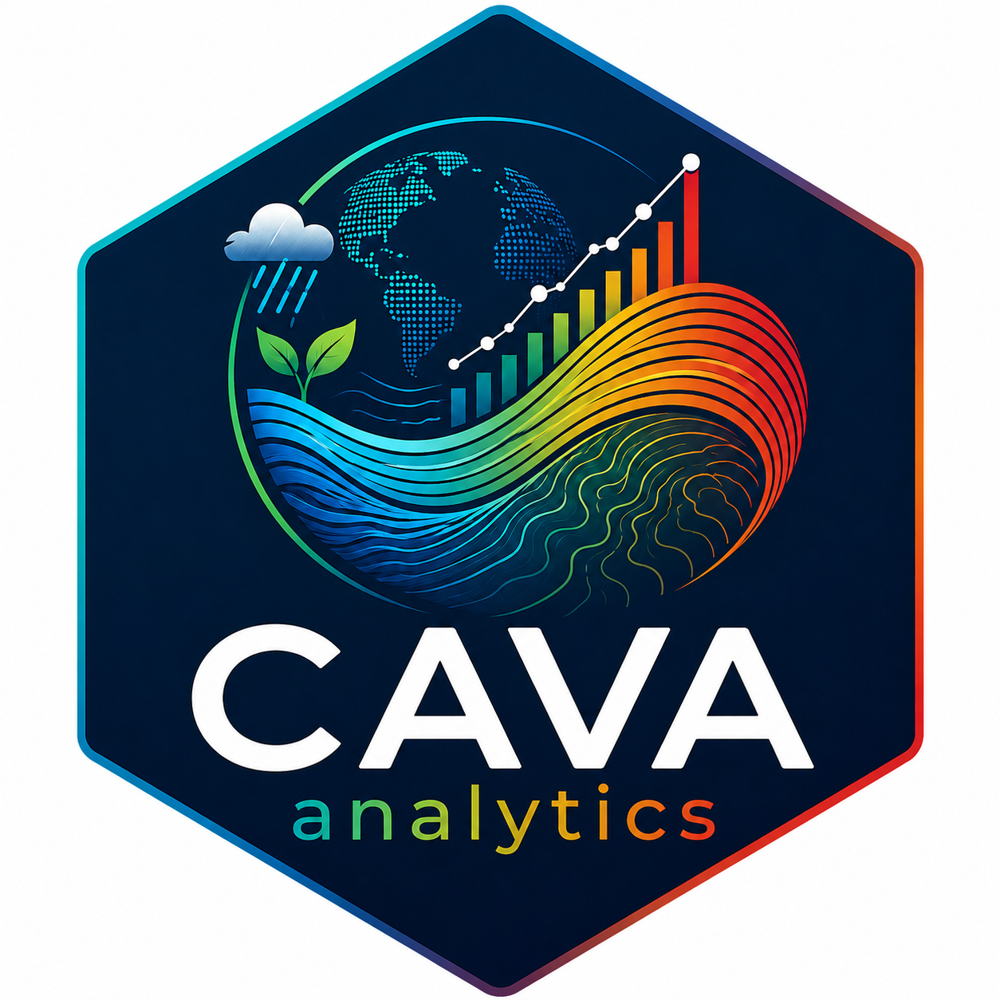

An R package for easy access, processing, and visualization of gridded climate products


Check GitHub Issues for known server downtimes
New: Bias-corrected CORDEX-CORE simulations (ISIMIP methodology) are now available as ready-to-use, pre-computed datasets — no local bias-correction step required.
What is CAVAanalytics?
Working with CORDEX-CORE climate projections normally means downloading terabytes of raw NetCDF files, reprojecting from rotated polar coordinates to regular lat/lon, writing boilerplate to handle non-Gregorian calendars, converting units, subsetting grids, wrangling multi-model ensembles, and layering bias correction on top. All before you can run a single analysis — let alone produce a publication-quality map.
CAVAanalytics collapses the entire workflow into a handful of function calls.
It streams only the spatial slice you need over OPeNDAP (no local archive required), returns analysis-ready objects with consistent units and a standard Gregorian calendar, then hands you a full suite of processing and visualization tools built for climate impact assessment work.
It is part of the CAVA (Climate and Agriculture Risk Visualization and Assessment) ecosystem, a joint initiative of FAO, the University of Cantabria, the University of Cape Town, and Predictia.
What gets handled automatically
A single load_data() call orchestrates the full data pipeline, and one more call produces analysis-ready results:
| Step | What happens |
|---|---|
| Inventory lookup | Resolves the correct OPeNDAP URL(s) for your GCM/RCM/RCP/domain combination from a live THREDDS inventory |
| Spatial subsetting | Streams only the grid cells inside your country or bounding box — no full-file downloads |
| Country → bbox | Converts a country name to a precise bounding box using Natural Earth shapefiles |
| Unit conversion | K → °C; kg m⁻² s⁻¹ → mm/day; J/m² → W/m²; 10 m → 2 m wind |
| Regridding | CORDEX outputs served on a regular lat/lon grid — standard spatial operations work out of the box |
| Bias correction | ERA5 fetched automatically as reference; EQM, QDM, or scaling trained and applied — no external tools needed |
| Pre-corrected datasets | CORDEX-CORE-BC: the full archive already corrected against ERA5 using the ISIMIP3 methodology |
| Parallelization | Variables and scenarios fetched in parallel; multi-file retrieval handled with threaded downloads |
Beyond data access — processing and visualization
Once data is loaded, CAVAanalytics provides a consistent analytical framework covering the full assessment workflow:
Climate indicators
Flexible threshold-based indicators work across all analysis functions:
- Simple thresholds — e.g. days with Tmax > 35 °C, days with precipitation > 20 mm
- Consecutive spells — e.g. maximum length of dry spells, longest heat wave
- Frequency counting — e.g. number of heat waves defined as ≥ 3 consecutive days above threshold
- Seasonal aggregation — any combination of months, multiple seasons in one call
- Trend detection — Mann-Kendall trend test applied pixel-by-pixel over the observational record
Analysis functions
| Function | What it produces |
|---|---|
observations() |
Processes the historical/observational period; computes indicators and trends |
projections() |
Processes future model runs; returns ensemble mean, spread, and model-level outputs |
climate_change_signal() |
Computes the change between future and historical periods with model agreement (IPCC stippling convention) |
model_biases() |
Quantifies the difference between model historical runs and observations |
All functions support on-the-fly bias correction (EQM, QDM, or scaling, with optional monthly windowing and cross-validation).
Visualization
A single plotting() call produces publication-ready maps for every analysis type:
- Spatial maps with ensemble mean or individual models
- Standard deviation across the ensemble
- Spatiotemporal breakdowns
- Temporal aggregations
- IPCC-style stippling for model agreement on climate change signal
- Built-in IPCC color palettes (
IPCC_palette()) for temperature and precipitation, including divergent variants - Fine-grained control:
legend_range,bins,intervals,alpha, boundary line width, facet label customization
Quick Example
Retrieve precipitation data for Sudan (1990–2000 historical, 2020–2030 projected), compute the climate change signal, and visualize the projected change in total annual precipitation.
Detailed examples are available in the tutorial.
library(CAVAanalytics)
# Load data
remote.data <- load_data(
country = "Sudan", variable = "pr",
years.hist = 1990:2000, years.proj = 2020:2030,
path.to.data = "CORDEX-CORE-BC", aggr.m = "sum", domain = "AFR-22"
)
# Compute climate change signal
sudan_ccs <- climate_change_signal(remote.data, season = list(1:12), bias.correction = FALSE)
# Plot results
plotting(
sudan_ccs, ensemble = FALSE,
plot_titles = "Precipitation change (mm)",
palette = IPCC_palette(type = "pr", divergent = TRUE),
legend_range = c(-400, 400)
)| Projected change in total annual precipitation compared to the 1990–2000 baseline period in Sudan |
Data coverage
Sources
- CORDEX-CORE regional climate simulations (25 km)
- ERA5 reanalysis (used directly and as the bias-correction reference)
- W5E5 v2 observational dataset
Data is hosted on the University of Cantabria THREDDS infrastructure.
Available datasets
| Dataset | Description |
|---|---|
| CORDEX-CORE | Original model outputs — use when you want raw projections or will apply your own post-processing |
| CORDEX-CORE-BC | Pre-bias-corrected outputs corrected against ERA5 using the ISIMIP3 methodology (trend-preserving quantile mapping) — use when you need a consistent, ready-to-use ensemble |
Installation
CAVAanalytics depends on rJava. If you are new to climate4R, install rJava first:
| Platform | Instructions |
|---|---|
| Windows | Installing rJava on Windows |
| Linux / macOS | Installing rJava on Linux and macOS |
Once rJava loads successfully in RStudio, install CAVAanalytics:
# Verify rJava works
if (!requireNamespace("rJava", quietly = TRUE)) install.packages("rJava")
library(rJava)
# Install pak if needed
if (!requireNamespace("pak", quietly = TRUE)) install.packages("pak")
# Install CAVAanalytics
pak::pkg_install("un-fao/CAVAanalytics")Why R (and not Python)?
CAVAanalytics was built with R packages like climate4R and tidyverse to prioritize visualization. However, R lacks Python’s out-of-memory parallel computation capabilities (via xarray + dask), which means CAVAanalytics relies on in-memory (RAM) processing. This can limit analysis of very large areas such as entire CORDEX domains. That said, CAVAanalytics was primarily designed for country-level assessments (memory-efficient functions are also available).
For large-scale data retrieval, consider cavapy, the Python companion focused on efficient data access.
Contributing
Contributions are welcome — fork this repository and submit a PR. If you find CAVAanalytics useful, please consider giving it a star!
Issues
Report bugs or problems here.